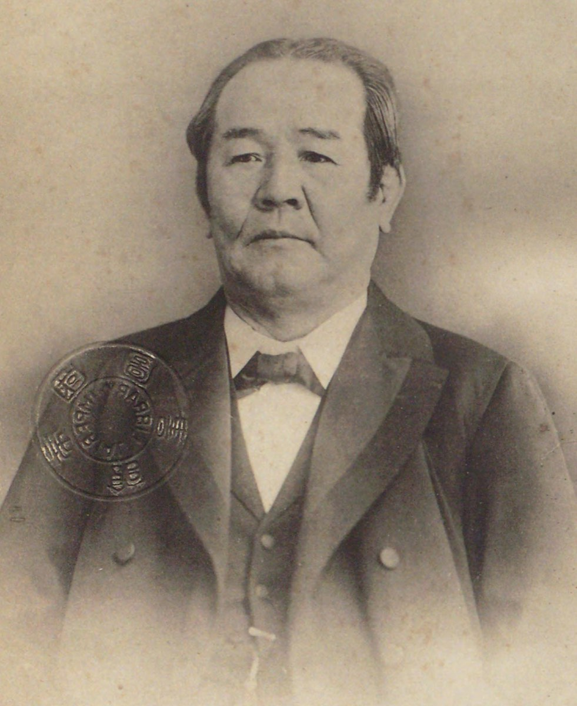
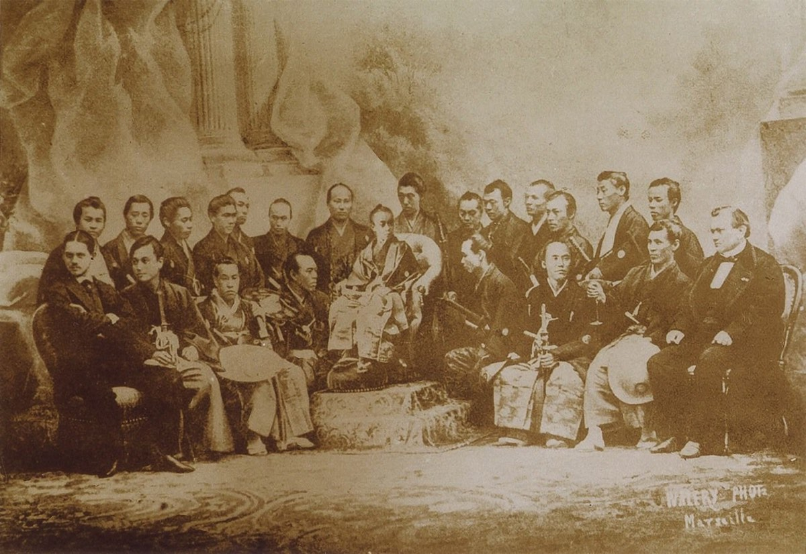
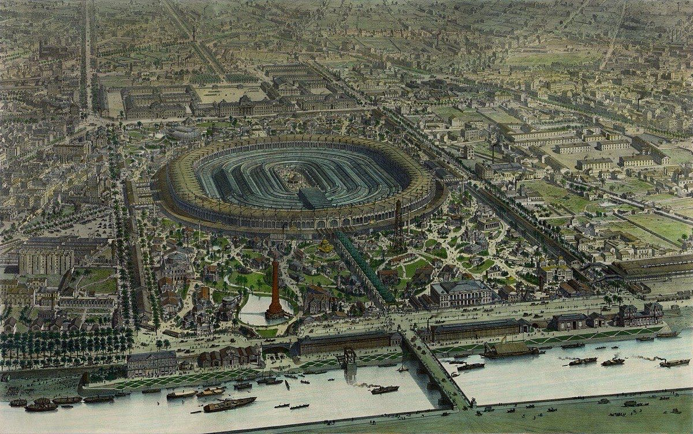
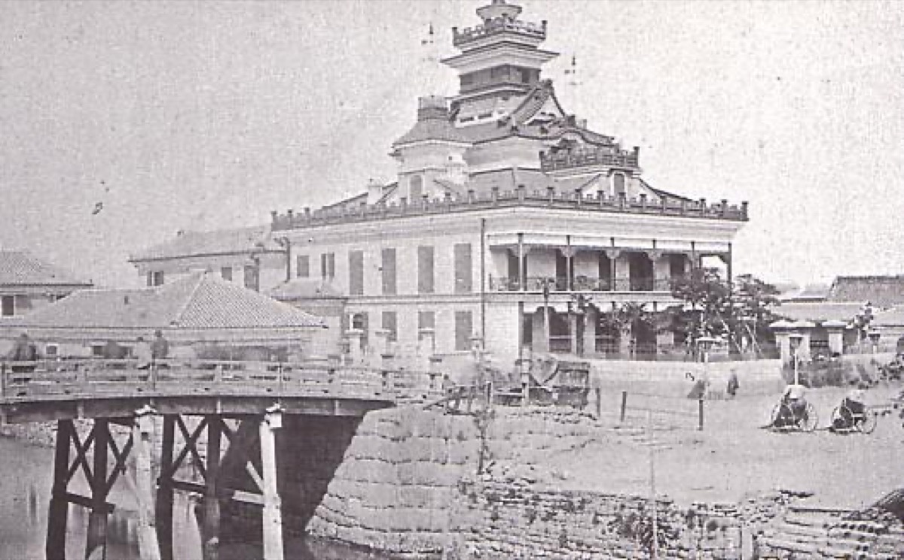
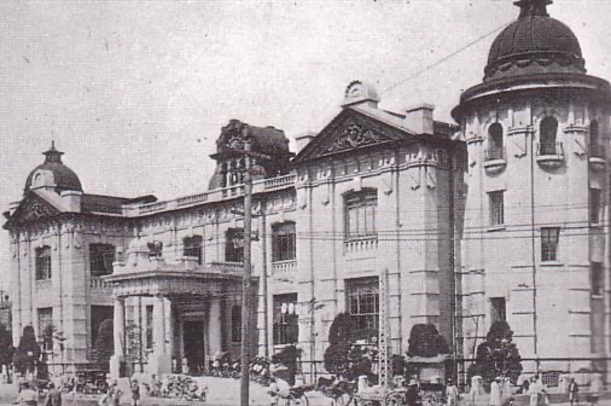
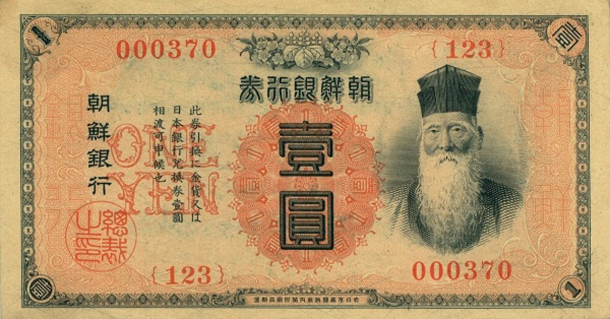
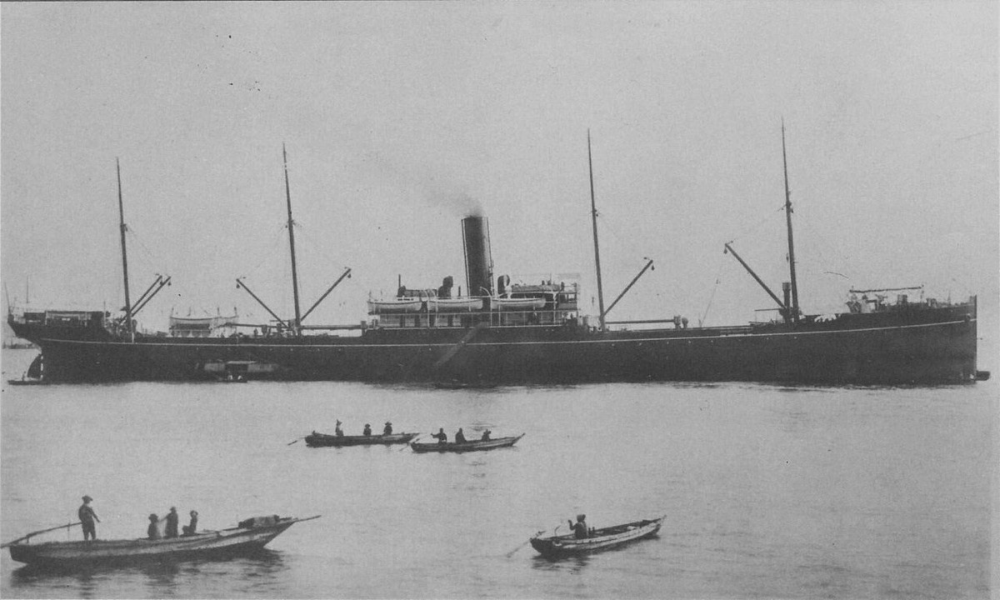
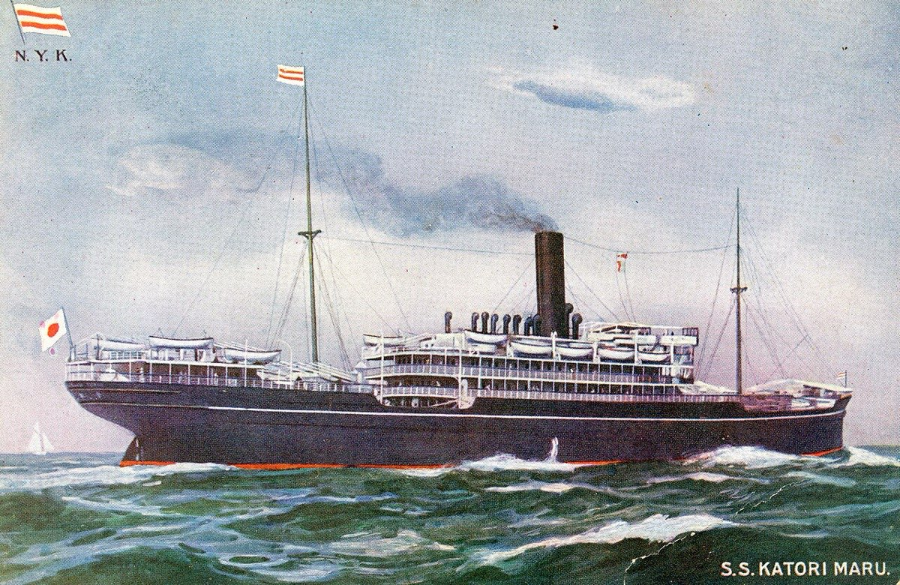

天保11年2月13日（1840年3月16日）武蔵国血洗島に生まれる。パリ万博随行の後に第一国立銀行の実務へ入り、広義では約500社に関与したと整理される。本ページは件数KPIを捨て、関与強度の階層と、共同運輸の発起人としての意思決定を検証する。1931年11月11日に満91歳で死去した。
作成日 2026年9月26日。再設計日 2026年11月11日。数値の基準日は再設計日。年表の満年齢は生年月日1840年3月16日からの年差。没後の項目は「没後N年」。共同運輸と日本郵船の運賃割引・出資比率の詳細は岩崎弥太郎側に置き、本ページでは渋沢側の関与と資源条件だけを書く。和暦と西暦は併記する。
先に結論を3つ書く。
1つ目。「約500社」は創業数ではなく、祝辞・題字を含む広義関与である。経営責任の中核は古稀時点約12社、ピーク同時役員約30社に収まる。東京商工会議所の洗い出しは481社である。1909年の古稀時点で頭取・会長名義は約12社、ピーク時の同時役員は約30社である。存続の概数は約6割継続・約3割解散・約1割不明であり、帝国データバンクは設立関与が確認できる系譜の現存を167社と数える（2024年7月）2349436。
2つ目。渋沢は共同運輸の創立発起人として、政府出資付きの半官半民会社を立ち上げ、合併局面では当初反対しのちに政府勧諭へ翻意した。政府主導の手続きは確認できる。合本理念と政府資源のどちらが帰結を説明するかは判定不能である。共同運輸は1882年に設立され1883年に開業した。資本金600万円（今の物価で約320億円）のうち政府が船舶現物で260万円（同約140億円）を出資し、社長は海軍少将、命令書に軍事転用条件がある。運賃競争の後、1885年に日本郵船へ合併した。数字の詳細は岩崎弥太郎に置く46504744。
3つ目。本人が単独頭取として再建した第一銀行は存続した一方、業務担当社員として出資した十勝開墾は資本金が100万円（今の物価で約45億円）から19万円（同約6.4億円）へ縮退し、第一銀行の朝鮮銀行券特権は1909年に移管された。中核・準中核の関与でも資本維持と特権保持は保証されない。1874年の小野組破綻では小野組保有株100万円分（1875年の減資時の物価で今の約72億円）を減資し、渋沢が単独頭取となった。十勝開墾は1911年時点で資本金19万円である。朝鮮での第一銀行券は1909年11月20日に韓国銀行へ移管された89322425。
読者と判断：産業育成や財界史の「関与社数」KPIを読むとき、広義関与（約500／481）と経営責任層（古稀時点約12、ピーク同時役員約30）を分ける。創業数として扱わない。中核関与の案件でも資本と特権が維持されるとは限らない。海運史では発起人としての手続きと、合本理念との相対的説明力を分けて判定する。
分解：物理的制約は当時の資本動員規模と通信・交通の速度。お金の流れは株式払込、銀行信用、政府の船舶現物出資と命令書の軍事転用条件。利得の帰属は株主・官吏・労働者・植民地当局。法と強制力は国立銀行条例、商法、農商務省の命令書。時間は設立から撤退・合併・移管までの保有期間である。

日付が財団年譜・伝記資料・社史で確定した出来事だけを並べた。各項目は事実、具体、なぜ効いたかの3層である。日付の右は、その時点の満年齢である。
検証の順は関与層、中核関与の結果、海運での発起人意思決定である。ここでは広義関与と経営責任層の切れ目を確認する。渡欧と第一銀行は、関与の起点として必要な範囲だけ置く。
1867年（慶応3年）、徳川昭武に随行してフランスへ出立した。滞在は約1年半。在仏の銀行家Flury-Hérardから銀行実務・公債・合本組織の説明を受けた、という後年の回顧が研究で一致する5616。
1873年、第一国立銀行の総監役に就く。資本金は資料により250万円（今の物価で約190億円。三井組・小野組が各100万円で約77億円）とする記述と、244万円・300万円（同約190億円・約230億円）とする記述がある（諸説）8918。



広義の「約500社」は、設立・助言・資金・人材・仲裁に加え、祝辞・題字まで含む洗い出しである。東京商工会議所のPDFは当時名義481社を掲げ、日経ビジネスの守屋淳は招宴出席・題字・祝辞の混入を具体例で示す（報道・single-source）34936。
経営責任層は別スケールである。1909年の古稀引退時の頭取名義は第一銀行である。会長名義は東京貯蓄銀行・東京瓦斯・東京石川島造船所・東京人造肥料・帝国ホテル・東京帽子・日本煉瓦製造・磐城炭礦・三重紡績・帝国劇場・日韓瓦斯など約11社である。合計は約12社である。島田昌和はピーク時の取締役・社長兼任を約30社と書く（学術論文・single-source）3635。
件数KPIを捨て、古稀時点約12社とピーク約30社を経営責任層、481社を広義関与層として読む判断が成立する。481社は信用付与の回数を測った集計ではない。存続の概数は約6割継続・約3割解散・約1割不明である。帝国データバンクは設立関与が確認できる系譜の現存を167社と数える（2024年7月）24。
出典2・3・4・35・36・49。TDB167は設立関与確認の現存系譜。
| 層 | 件数 | 定義 | 出典 |
|---|---|---|---|
| 広義関与（財団） | 約500 | 設立・経営の広義。創業数ではない | 2 |
| 広義関与（東商） | 481 | 社史等の洗い出し。祝辞・題字を含む | 336 |
| 存続概数 | 約6割 | 合併・国有化等を含む継続。解散約3割・不明約1割 | 2 |
| 現存系譜（TDB） | 167 | 2024-07。設立関与が確認できる系譜 | 4 |
| 古稀時点の中核 | 約12 | 1909。頭取1＋会長名義約11 | 36 |
| ピーク同時役員 | 約30 | 島田2003。単年の同時兼任 | 35（single-source） |
主張3では、本人が単独頭取・業務担当・銀行特権に関与した案件の結果を金額と時点で確認する。存続した案件と、資本縮退・特権移管した案件を対比する。
1874年10月、官金預りの担保を預り額同額へ引き上げる抵当増額令が出た。小野組は11月20日に破綻し、同行は関連貸出の回収困難に直面した。小野組保有株100万円分（1875年の物価で今の約72億円）を減資し、総監役制を廃して渋沢が単独頭取となった。第一銀行は存続し、1909年の古稀時点でも頭取名義に残る。観測できるのは、体制変更と減資の後も同行が存続したことである。体制変更と減資が存続の原因かは判定不能である。判定には、同時期に同じ抵当増額令を受けた他の為替方・銀行の帰結との比較が要る。担保同額実務を以後の一般基準とみなす後続記録は未取得である8192036。
1897年4月8日の第2回社員総会は、資本金100万円（今の物価で約49億円）の設立契約と出資分担額を議決した。伝記資料綱文は「当会社ハ栄一外二十四名ノ出資ヨリナル資本金一百万円ノ合資会社ニシテ、栄一五万円ヲ分担ス」（5万円は今の物価で約2.5億円）と記し、同日に栄一を業務担当社員に選んだと記す。会社は1898年に設立された。1900年10月に70万円（今の物価で約30億円）、1901年に36万円（同約16億円）へ減資した。1903年10月28日の臨時総会で19万円（同約7.6億円）へ減資し、栄一は大倉喜八郎とともに監査役へ移った。1909年6月6日に古稀を理由に監査役を辞した。1911年の記念帖時点でも資本金19万円（今の物価で約6.4億円）・社員6名・貸下地5,400町歩である。本人が出資と業務担当を担った期間に、資本金は100万円から36万円へ減り、1903年には19万円になった。3233
出典32・33。1900年70万円・1901年36万円・1903年19万円は伝記資料綱文。
第一銀行は1902年から朝鮮で銀行券を発行し、1905年勅令で国庫・紙幣発行の特権を得た。1909年11月20日に韓国銀行へ中央銀行業務を引き継いだ。伝記資料は移管覚書（1909年6月）と引継契約を記す。韓国銀行は1911年に朝鮮銀行へ改称された。第一銀行が得た朝鮮の銀行券特権は、本人の頭取在任中に移管された。82425


| 案件 | 渋沢の関与 | 結果 | 日本円（今の物価） | 主張3での位置 |
|---|---|---|---|---|
| 第一銀行（1874–75） | 単独頭取へ移行。減資100万円 | 存続。古稀時点も頭取名義 | 減資額 約72億円 | 存続の対比 |
| 十勝開墾（1898–1911） | 業務担当社員（1897–1903）、監査役（1903–1909）。出資5万円 | 資本金100→19万円 | 出資 約2.5億円。資本金 約45億円→約6.4億円 | 資本維持は保証されない |
| 朝鮮銀行券（1902–09） | 第一銀行頭取として特権運用 | 1909-11-20に韓国銀行へ移管 | — | 特権保持は保証されない |
存続と縮退・移管が同じ人物の中核・準中核関与の中に並ぶ。主張3の判定は支持である。設立関与と危機介入の全件クロス存続表は未取得である3536。
1906年、浅野総一郎主唱の石狩石炭株式会社が資本金750万円（今の物価で約280億円）で創立。栄一は顧問で1909年に辞任。1920年に北海道炭礦汽船へ合併された。払込は1911年時点で277.5万円（同約93億円）。顧問層は主張1の広義関与に混入する境界例であり、主張3の中核判定には使わない3437。
東京瓦斯会社は1885年創立（資本金27万円。今の物価で約17億円）、のち取締役会長を務めた。1909年の古稀で会長を退く。本ページが確認した範囲では、1908–1909年の東京市会疑獄で渋沢本人が収賄として起訴された記録は見当たらない。起訴名簿と取締役会出席記録の突合は未取得である2238。
欠落データ。1908–1909年の市会議員・市吏員の起訴名簿と、東京瓦斯取締役会の出席記録を突合した一次表は未取得（有料社史・裁判記録の全点照会が必要）。設立関与と危機介入の存続率クロス表も未取得である。
主張2では、渋沢が共同運輸の創立発起人として何を引き受け合併局面で何を決めたかを読む。政府主導の手続きと、合本理念との相対的説明力は分けて判定する。
共同運輸会社は1882年に設立され、1883年に開業した。アジア歴史資料センターは、農商務大輔・品川弥二郎が推進し、渋沢栄一・益田孝・小室信夫・原六郎が発起人となったと書く。財団の変遷図も関わりを「創立発起人」とする。資本金は600万円（今の物価で約320億円）、うち政府出資260万円（同約140億円）は船舶の現物出資である。社長は海軍少将・伊藤雋吉、命令書は有事の軍事転用を条件に含む。解説は「半官半民の海運会社」とし、設立趣旨を郵便汽船三菱会社への対抗と書く46505148。
『渋沢栄一伝記資料』第8巻は、栄一が創立発起人となり資本金600万円のうち260万円を政府が引き受けたと記す。年二分の配当を受ける特典が付いた。開業後は「会社背後ニ在リテ之ヲ援助」した、と書く50。
営業開始後の運賃競争では、旅客は2割から3割引、貨物は3割引から4割引が常態化した（詳細は岩崎弥太郎）。両社の競争が激化し経営が悪化したため、政府は1885年に共同運輸の社長を更迭し合併を進めた。1885年に日本郵船が発足し、出資比率は共同6対三菱5である474446。


| 項目 | 数値・内容 | 日本円（今の物価） | 時点・条件 |
|---|---|---|---|
| 渋沢の地位 | 創立発起人 | — | 1882。背後で援助。合併後は株主、のち取締役465051 |
| 共同運輸・資本金 | 600万円 | 約320億円 | 1882設立、1883開業。政府船舶現物出資260万円を含む46 |
| 政府出資比率 | 260／600 | 260万円は約140億円 | 約43%。船舶現物。軍事転用条件付き4648 |
| 運賃割引（旅客） | 2〜3割 | — | 競争期。岩崎ページと共有、再計算しない47 |
| 運賃割引（貨物） | 3〜4割 | — | 同上47 |
| 日本郵船出資比 | 共同6：三菱5 | — | 1885合併後4744 |
1878年頃の向島の会合では、合本と一家事業の経営観が衝突したと三菱側・財団側の双方が記す1011。理念言語は存在する。合併の手続きでは政府が勧諭と社長更迭を行った。
伝記資料第8巻は次を記す。競争で双方が疲弊し、政府が共同運輸の正副社長を更迭して局面を収拾し、両社合併のほかに途がないと見て内諭した。三菱側は諒としたが、栄一ほか共同運輸側取締役の若干名は初め反対を唱え、やがて翻意して政府の勧諭に従い、1885年8月15日の臨時株主総会で合併による新汽船会社の設立を決議した。同年10月1日に日本郵船が発足し、栄一は株主となった。のち1893年に取締役に当選し、1909年の古稀で取締役を辞した50。
| 要因 | 確認できる内容 | 出典 | 判定上の位置 |
|---|---|---|---|
| 渋沢の発起人地位 | 創立発起人。背後で援助 | 4650 | 手続き。支持側 |
| 政府船舶現物出資 | 資本金600万円中260万円 | 46 | 手続き。支持側 |
| 軍事転用条件 | 命令書。海軍少将が社長 | 4648 | 手続き。支持側 |
| 運賃競争と経営悪化 | 旅客2〜3割、貨物3〜4割 | 4746 | 手続きの前段。確認 |
| 政府による合併勧諭 | 社長更迭と内諭。臨時総会決議 | 4650 | 手続き。支持側 |
| 渋沢ほかの反対→翻意 | 初め反対、やがて政府勧諭に従う | 50 | 手続き。支持側 |
| 合本対一家の言語 | 向島会合などの経営観衝突 | 1011 | 相対的説明力。判定不能 |
発起人としての設立関与、政府出資と合併勧諭、反対から翻意までの手続きは支持できる。合本対一家の言語も存在する。ただし理念と政府資源のどちらが合併帰結を説明するかを識別する比較データは足りない。相対的説明力の判定は判定不能である。
財団の合本主義研究は、「公益を追求する使命に最も適した人材と資本を集め、事業を推進させる考え方」と定義する40。島田の同族会会議録分析は、軌道に乗った会社の株式を売却し次の新設へ再投資する循環を示す。役割は「可能性はあるが信用のない企業に信用を付与する」ことにあった、という整理である（学術論文・single-source）。これは主張1の件数KPIを測る定義ではない。481社の広義洗い出しとは別の分析枠である3536。
『論語と算盤』（1916年）は道徳と営利の一致を説く訓話集である。主張の検証に必要な範囲では、合本を件数KPIではなく規範の語彙として読むための一次にとどめる26。
日付と出典が特定できる発言に限った。出典未確定の言い回しは載せない。
本文の金額は全て明治期の円である。物価で換算すると共同運輸の資本金600万円は今の約320億円であり、当時の初任給と比べると約2,000億円の重みになる。
| 本文の金額 | 年 | 当時のレートで円 | 今の物価で円 | 給料で見た重み | 意味 |
|---|---|---|---|---|---|
| 第一国立銀行の資本金 250万円 | 1873 | —（円建て） | 約190億円 | 未収録（1873年の初任給は換算表に無い） | 三井組と小野組が各100万円を出す構成であり、1組の破綻が資本の4割に及ぶ。 |
| 小野組保有株の減資 100万円 | 1875 | —（円建て） | 約72億円 | 約490億円（巡査基準。大卒相当は未収録） | 資本金250万円の4割に当たり、渋沢はこの減資と同時に単独頭取となった。 |
| 共同運輸の資本金 600万円 | 1882 | —（円建て） | 約320億円 | 約2,000億円（巡査基準） | 第一国立銀行の資本金250万円の2.4倍の規模である。 |
| 政府の船舶現物出資 260万円 | 1882 | —（円建て） | 約140億円 | 約870億円（巡査基準） | 資本金の約43%を政府が占め、民間の出資は340万円であった。 |
| 東京瓦斯の資本金 27万円 | 1885 | —（円建て） | 約17億円 | 約83億円（巡査基準） | 共同運輸の資本金600万円の4.5%の規模である。 |
| 十勝開墾の資本金 100万円 | 1897 | —（円建て） | 約49億円 | 約53億〜230億円 | 出資者25名の合資会社であり、栄一の分担はその5%である。 |
| 栄一の分担出資 5万円 | 1897 | —（円建て） | 約2.5億円 | 約2.6億〜12億円 | 当時の大卒相当初任給（月50円）の約83年分に当たる個人出資である。 |
| 十勝開墾の減資後の資本金 19万円 | 1903 | —（円建て） | 約7.6億円 | 約10億〜36億円 | 設立時の資本金の19%であり、この減資と同時に栄一は監査役へ移った。 |
| 石狩石炭の資本金 750万円 | 1906 | —（円建て） | 約280億円 | 約390億〜1,300億円 | 十勝開墾の設立時の資本金の7.5倍であり、栄一は顧問の立場にとどまった。 |
今の物価で円にする換算は、日本銀行『日本銀行百年史』の消費者物価指数と総務省の戦前基準5大費目指数を接続し、その年から2025年までの物価倍率を掛けた。給料で見た重みは、高等官の初任給を今の大卒初任給262,300円と比べた倍率と、巡査の初任給を今の高卒初任給207,300円と比べた倍率の幅で示した。明治の高等官は同世代のごく一部であり、初任給が巡査の約6倍あったため、二つの倍率は約4倍異なる。物価倍率が賃金倍率より小さいのは、この間に実質賃金が大きく上がったためであり、物価で換算した値は当時の重みを小さく示す。1894年より前の大卒相当初任給と1873年の初任給は換算表に無いため、該当の欄は未収録とした。


_03.jpg){kind=link}